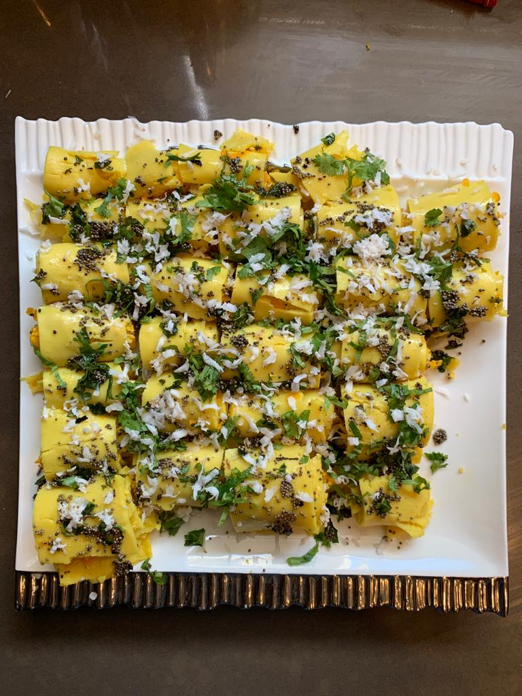

KHANDVI

INGREDIENTS
- Chickpea flour
- Curd
- Water
- Powdered sugar
- Turmeric powder
- Iodised salt
INSTRUCTIONS
- Put some refined oil
- Then one spoon of mustard seeds
- Put on stove at light flame along with this put some paneer and carrot. Mix it properly.
- Take one bowl; put chickpea,curd,sugar,water and powdwered turmeric.Mix it well.After mixing put it on another bowl after refining.
- Now take big wok and put it on high flame.Put mixture in that.Put half table spoon of refine oil.Stir it properly.After 10 min,stop the flame.
- Take full material on one slate and roll it like a spring roll.After that cut it into small pices.
- Put some raddish and Carrot on it and decorate it well . Yours khandvi is raedy to serve.